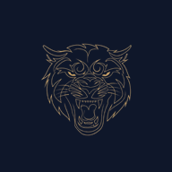

KANEMBERG MOBILE
Porteiro Inteligente PWA · Conexão Automática
Localizando servidor ativo do dia...
Destino Detectado
Verificando tunnel_status.json...

Porteiro Inteligente PWA · Conexão Automática